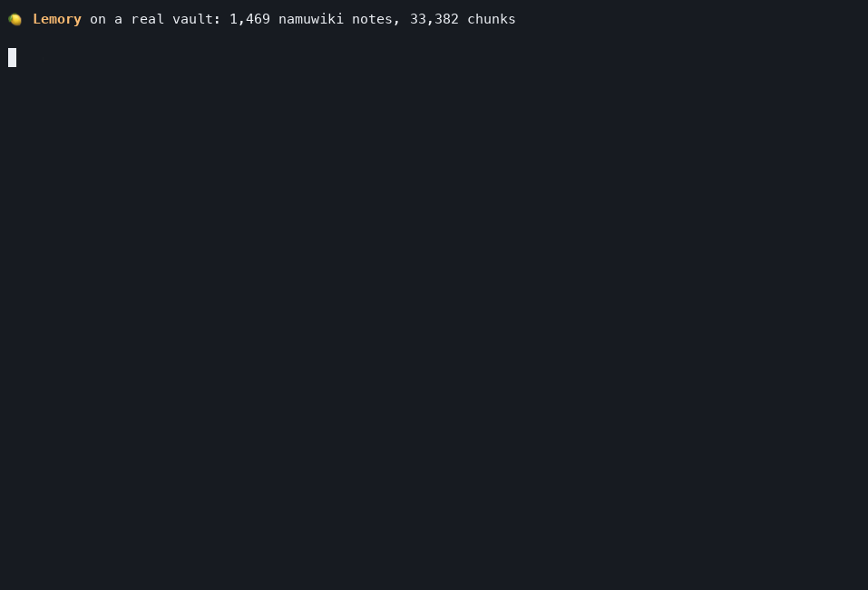
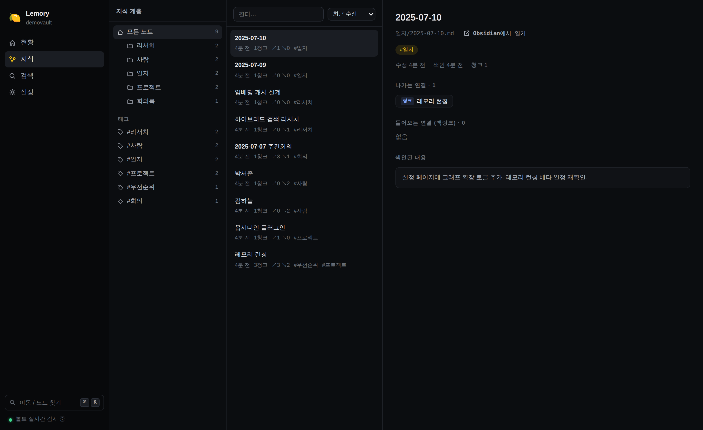

Turn your Obsidian/Markdown notes into memory for every AI you use. Not rows in someone's database — files in your own folder.
Start in one minute Keyless, free, everything runs on your machine
Not a mockup. A real 1,469-document wiki vault answering in 0.1s, with a typo repaired without any API call.Today's AI memory products want your knowledge as rows in their database. They summarize what you said and store the summary. Information is lost at write time, you can't verify it later, and if you ever leave the service, your memory stays behind.
We think differently: the Markdown files you already own are the
better database. They have dates, original wording, git history, and
one rm deletes them. Lemory sits between those files and your
AI, and does three things:
Hybrid retrieval: semantic + CJK-aware keyword search + your [[wikilink]] graph. Benchmarked against every competitor we can run — losses published too.
Decisions and facts land as plain .md notes in your vault, with duplicate detection and automatic related-links.
Every query, every note an AI wrote (one-click undo), per-client usage — all in a dashboard, all in one local SQLite file.
One more thing: most of this space treats Korean (and CJK in general) as an afterthought. Lemory treats it as a benchmark suite — Hangul bigram indexing, syllable-level typo repair, morphology-aware matching. Ask in Korean over English notes and it still finds the answer.
Every number regenerates from committed code and public data. Losses and failed experiments are published too: BENCHMARKS.md.
pipx install "git+https://github.com/jwgo/lemory"
No pipx? Plain pip install works. Python 3.10+ is all you need.
lemory up ~/Obsidian/MyVault
This one line does config → indexing → dashboard. Any
folder of .md files counts as a vault — Obsidian optional.
lemory ask "where did I leave off on that project?"
That's it. Typos and casual phrasing are fine.
With a Gemini key it uses the cloud; without one it runs the on-device stack that ships by default (Korean-tuned e5-small-ko-v2 embeddings + Gemma 4 answers). In fully-offline mode, not one byte of your vault leaves the machine — air-gapped environments included.
| Mode | Needs | You get |
|---|---|---|
| On-device (default) | No key, 8GB+ RAM | Search + answers, fully offline |
| Light local | No key, 4GB RAM | Search only (Raspberry-Pi-class OK) |
| Gemini cloud | One free key (no card) | Search + answers, ~250 questions/day free |
No LLM pipeline runs at ingest. Indexing 1,000 notes = 0 LLM calls, searchable in seconds.
"What budget did we settle on at the Q3 kickoff?" "How did the remote policy change since last year?" — the more meeting notes, the stronger it gets.
"What was the event loop again — from my notes?" Answers from what you wrote, not from the internet.
Connect Claude/Cursor via MCP and decisions survive the session. The next session picks up where you left off.
Import your ChatGPT/Claude exports and decisions buried in conversations become searchable — a month later, with the source cited.
"What did I write down to prep for that boss?" "My golden ratio for kimchi stew" — strategy notes and recipes alike.
"That ramen place in Osaka?" "What's step one if my lease renewal is refused?" — anything you ever wrote down.
$ lemory ask "what database does the Atlas project lead prefer?" # multi-hop: Atlas note → [[lead]] wikilink → that person's note has the answer $ lemory ask "what book have I been reading lately?" # picks the CURRENT one $ lemory ask "what was I reading in March?" # March reaches history
Your [[wikilinks]] are already a knowledge graph. Reading
them for free measured higher on multi-hop (1.000) than the graphs
competitors pay LLM pipelines to build (0.53–0.81).
lemory serve # http://127.0.0.1:8377
The Obsidian plugin, Claude/MCP, and the web dashboard all attach here.
Edit notes while it runs and they re-index within seconds. One-off
lemory ask works without it.

claude mcp add lemory -- lemory mcp --vault ~/Obsidian/MyVault --client claude-desktop lemory skill install claude-code # teach the assistant to use it well lemory hooks install claude-code # auto-save session memory on exit
Cursor, Windsurf, VS Code — anything that speaks MCP works the same way. With the hook installed, every Claude Code session ends by saving the decisions worth keeping as one dated note. No discipline required.
lemory remember "VPN renews every March, owner: Kim Haneul" --tags ops lemory search "tag:meetings folder:2026 budget" # scoped search lemory suggest-links # unlinked mentions → link proposals (weekly) lemory drift # broken links & unresolved duplicates lemory graph --open # the whole vault as an interactive graph
Everything an AI writes shows up in the dashboard feed with attribution and an undo button. Nothing passes through invisibly.
--- lemory: false ---
Put that at the top of any note and it is never indexed, never retrieved, never sent to any model. Your diary stays a diary.
your vault (*.md) ──watch──► parse: frontmatter · tags · [[links]] · dates
│
▼
one SQLite file: chunks · BM25 · link graph · embed cache
│
query ─► typo repair ─► dense + lexical (fusion) ─► title & recency boosts
│
1-hop graph expansion ← multi-hop answers come from here
│
▼
dated, cited context ─► LLM ─► answer [n]
Search is local and LLM-free (3–13ms). One embedding call per query (cached), one generation call per answer. Past 20k chunks the vector index switches automatically — 1M chunks = 5.9ms per query.
| Measured | Lemory | Context |
|---|---|---|
| Multi-hop answer-in-context@8 | 1.000 | LightRAG 0.807 · mem0 0.579 · qmd 0.526 |
| Retrieval latency (p50) | ~3ms | mem0 212ms · qmd 0.6–59s |
| KorQuAD recall@1 (keyless local) | 0.930 | BM25 0.900 · vector-only 0.840 |
| LongMemEval 500-question Recall@5 | 0.983 | zero API calls, local embedder |
| Ingest (1,000 notes) | 0 LLM calls | some competitors: 45 min for 54 notes |
All measured on the same harness, reproducible from the repo. The axes we lose (e.g. a small English vault where vector-only edges us by one question) are printed too.
import lemory
lemory.configure(vault="~/Obsidian/MyVault")
lemory.index()
print(lemory.ask("what did I decide about pricing?").text)
REST GET /search · POST /ask · POST /memory …
TS/JS zero-dep client (clients/js)
Python LangChain · LlamaIndex retrievers
Docker self-hosting
Connector SDK lemory connect script.py pulls any source into vault notes
Details in the English README.